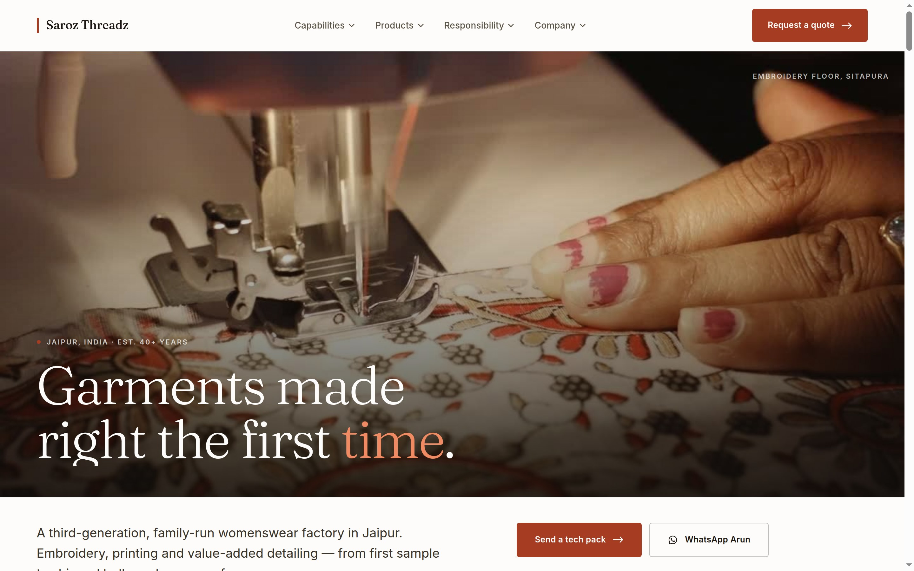
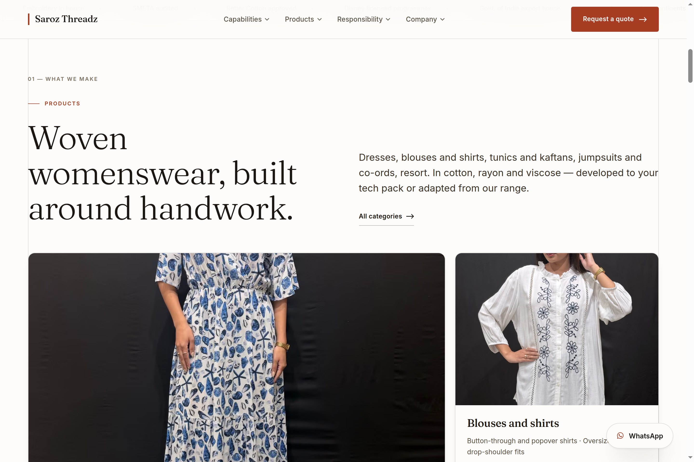
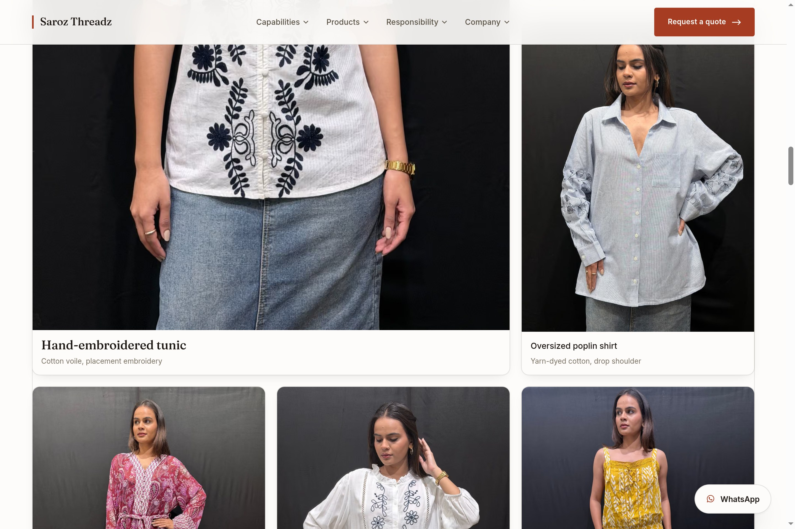
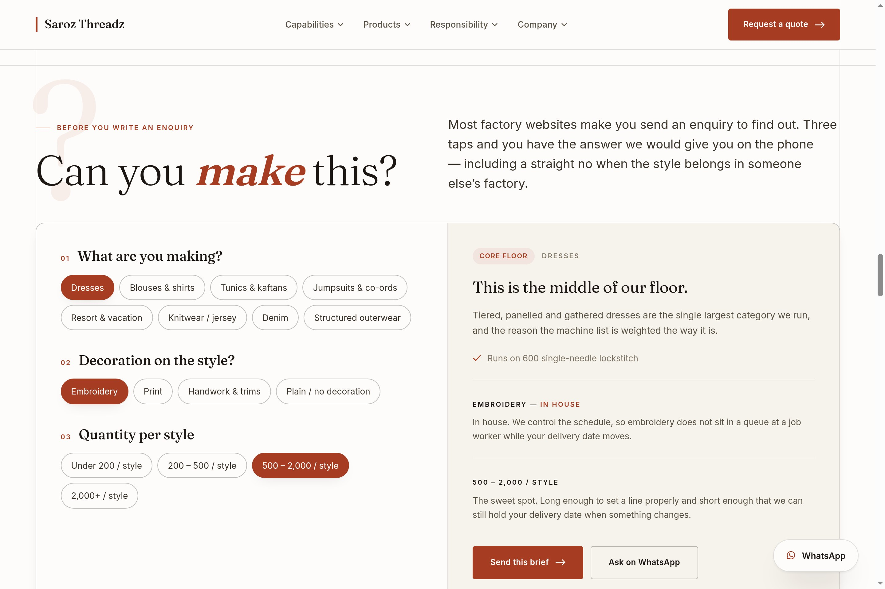
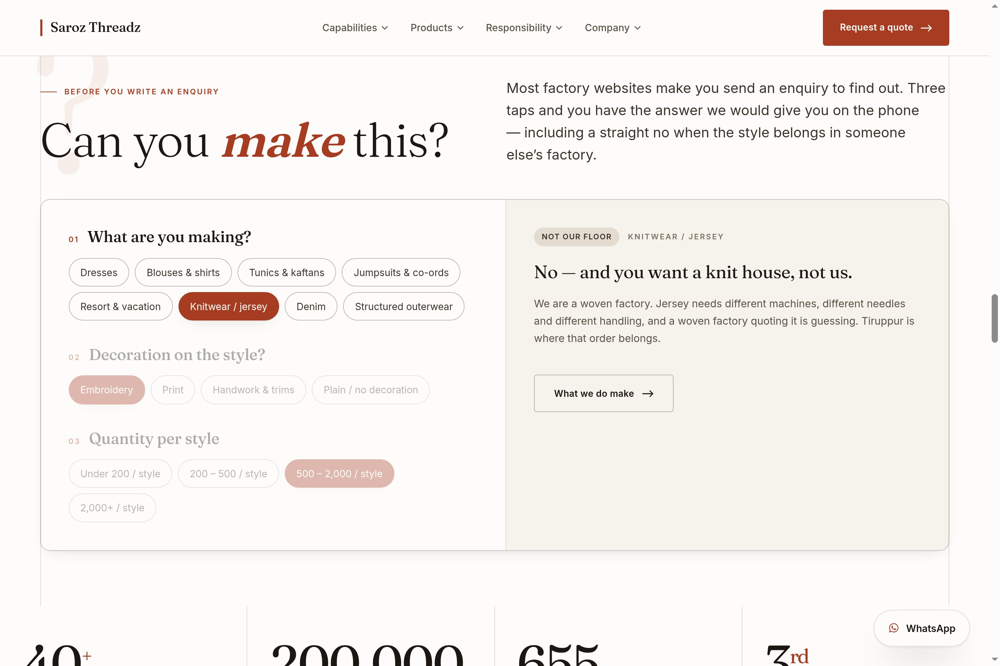
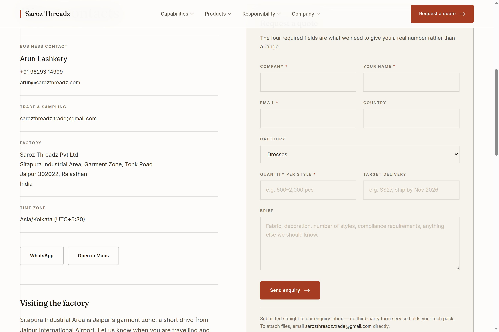
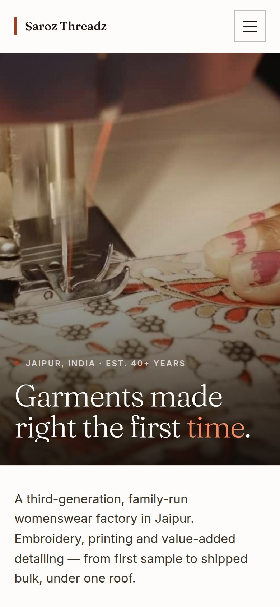
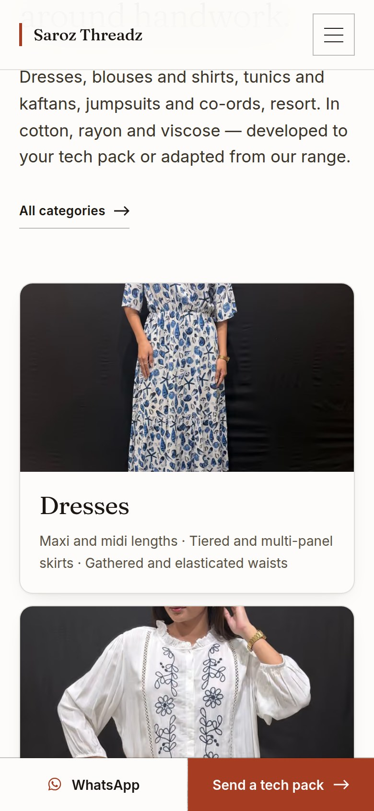
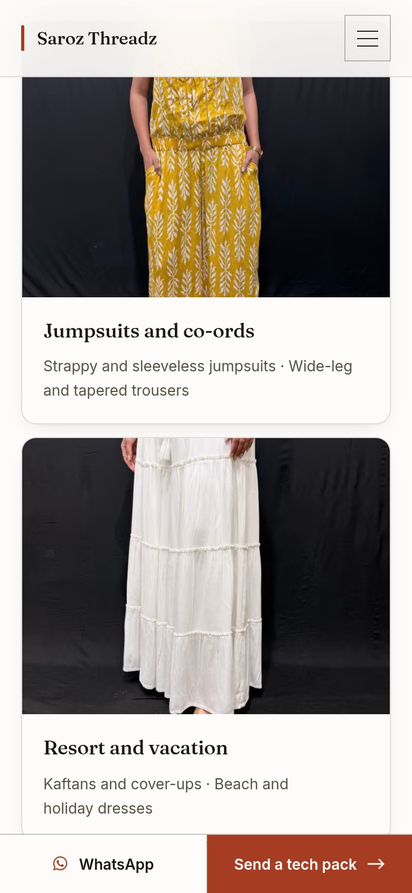

New website · for your review
Rebuilt around the way buyers actually shop for a factory: the garments and the floor lead, and every page is built to be found in search and quoted by AI assistants.

sarozthreadz-git-main-techishealthy.vercel.app
A working address for review. The finished site moves to sarozthreadz.com,
which the company already owns.
What changed
You pointed us at Cheer Sagar, Aman Exports International and BK Fashion. All three are bright, white and photograph-led, because that is what a sourcing manager expects from a womenswear exporter. The previous version was black with orange type — it read as a technology company, and it hid the one thing that sells: the garments.
Nothing about the company’s facts changed. The machine list, the certifications, the markets and the addresses are exactly as they were — only how they are presented.
The garments come first


Each style names its fabric and construction and links into the category page that can quote it — so a photograph is something a sourcing manager can act on, not decoration.
New · your sales tool
Three taps — category, decoration, quantity — and the buyer gets the answer you would give on the phone: whether it is core floor, which machines it runs on, whether the decoration is yours or a partner’s, and what that quantity means commercially.

And it says no

A factory that rules itself out in ten seconds wins the dress order it can actually deliver, and never loses three weeks of both sides’ time on one it cannot. Buyers remember the factory that told them the truth, and they come back with the right enquiry.
Please read these four refusals before the site goes public. They commit the company in writing — including naming Tiruppur for knitwear, and saying there is no denim laundry on site. If any of it is wrong, it is a small change.
How a buyer reaches you
Your desk runs on WhatsApp, so it is now on the front page, inside the qualifier, in a block that names you, and on a bar that follows the buyer down every page. Enquiries reach you directly — there is no agent and no shared inbox in between.

The enquiry form asks only for what is needed to give a real number rather than a range: company, name, email, category, quantity per style and a delivery window.
On a phone

The floor takes the screen

Garments straight after

The qualifier, tap-sized
Every page is built for a phone first: full-width buttons, WhatsApp always within reach, and pages that load quickly on an ordinary connection.
To finish it
This is the biggest gap. Every picture we have is a garment on a model. There is not one wide shot of the 200,000 sq. ft. floor with the lines running — the image a buyer actually wants, and the one thing the site claims but cannot show. A half day with a photographer fixes it: the sewing floor, the embroidery machines running, the cutting and pattern rooms, QA and finishing, the worker canteen — and a portrait of you and the family.
Minimum order quantity per style, monthly capacity, sampling lead time, bulk lead time, headcount. Each one currently reads “on request”, which is honest but costs enquiries. Even a range is worth more than nothing.
“Global fashion brands” is weak. One named brand that permits it is worth more than the rest of the page.
sarozthreadz-git-main-techishealthy.vercel.app
A working address for review. Any design change you want is straightforward.